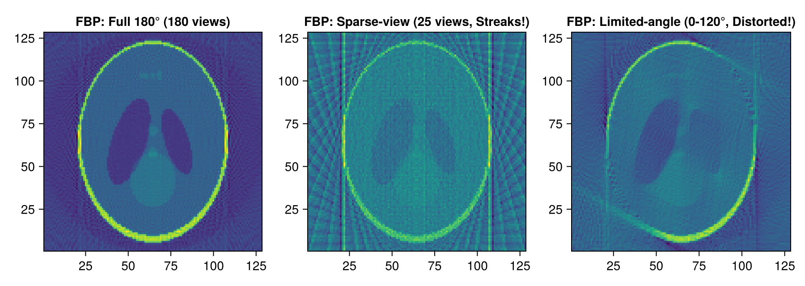
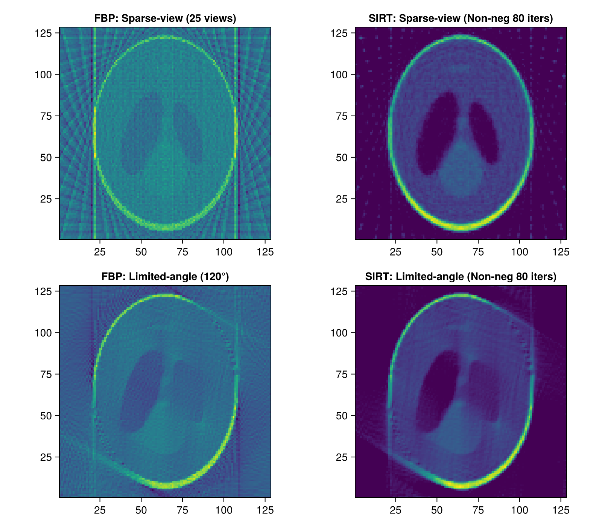
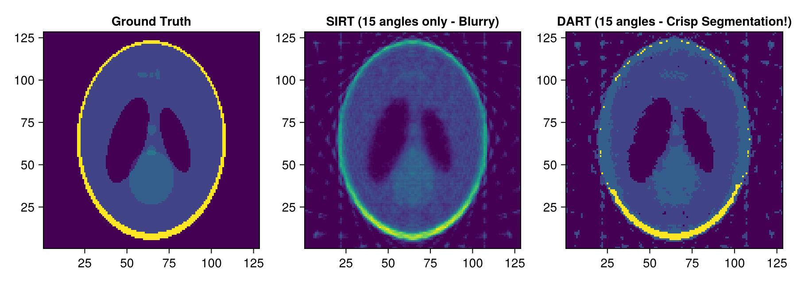

Tutorial 8: Reconstruction Comparison: Limited-Angle and Sparse-View CT
Incomplete Data Conditions, FBP Breakdown, SIRT Non-Negativity Constraints, and DART Discrete Reconstruction.
Prerequisites
This tutorial uses Makie (recommended backend: CairoMakie) for visualization. If CairoMakie is not installed in your environment, add it by running using Pkg; Pkg.add("CairoMakie").
1. Introduction
In real-world CT applications (low-dose medical imaging, high-speed in-line industrial inspection, or electron tomography constrained by specimen tilt holder stages), incomplete data problems frequently arise.
Typical incomplete data conditions:
- Sparse-view CT: Angular span covers 180°, but with extremely few projection angles (e.g. 15–25 angles).
- Limited-angle CT: Mechanical constraints restrict angular coverage (e.g. only 0° to 120°).
In this notebook, we observe how analytical FBP breaks down under these conditions, and demonstrate how algebraic iterative methods (SIRT) and Discrete Tomography (DART) recover high-fidelity reconstructions.
2. Package Loading and Environment Setup
using AstraToolbox
using CairoMakie
using LinearAlgebra
println("Ready for Limited-Angle & Sparse-View CT exploration!")3. Geometric Definitions and Forward Projections for 3 Scan Conditions
We simulate sinograms for three scanning conditions on the same phantom:
- Condition A (Full 180°): 180 angles (complete data).
- Condition B (Sparse-view): 25 angles (angular undersampling).
- Condition C (Limited-angle): 0° to 120° only (60 angles, missing angular wedge).
nx, ny = 128, 128
vol_geom = VolumeGeometry2D(nx, ny)
phantom = shepp_logan(nx)
# Condition A: Full 180° (180 angles)
angles_full = Float32.(range(0, pi, length = 180))
geom_full = Parallel2DGeometry(angles_full, 128, 1.0f0)
# Condition B: Sparse-view (only 25 angles)
angles_sparse = Float32.(range(0, pi, length = 25))
geom_sparse = Parallel2DGeometry(angles_sparse, 128, 1.0f0)
# Condition C: Limited-angle (0 to 120 deg = 2pi/3 only)
angles_limited = Float32.(range(0, 2pi/3, length = 60))
geom_limited = Parallel2DGeometry(angles_limited, 128, 1.0f0)
# Generate sinograms
sino_full = project(phantom, geom_full)
sino_sparse = project(phantom, geom_sparse)
sino_limited = project(phantom, geom_limited)
println("Full sino size: ", size(sino_full))
println("Sparse sino size: ", size(sino_sparse))
println("Limited sino size: ", size(sino_limited))4. Breakdown of Analytical FBP
Applying analytical FBP to these incomplete sinograms reveals severe limitations:
- In Sparse-view, intense radial streak artifacts permeate the image.
- In Limited-angle, edges aligned with missing angles become heavily blurred and distorted.
rec_fbp_full = reconstruct(sino_full, geom_full, FBPMethod(); volume_size = (nx, ny))
rec_fbp_sparse = reconstruct(sino_sparse, geom_sparse, FBPMethod(); volume_size = (nx, ny))
rec_fbp_limited = reconstruct(sino_limited, geom_limited, FBPMethod(); volume_size = (nx, ny))
fig = Figure(size = (900, 320))
ax1 = Axis(fig[1, 1], title = "FBP: Full 180° (180 views)", aspect = DataAspect())
heatmap!(ax1, rec_fbp_full, colormap = :viridis)
ax2 = Axis(fig[1, 2], title = "FBP: Sparse-view (25 views, Streaks!)", aspect = DataAspect())
heatmap!(ax2, rec_fbp_sparse, colormap = :viridis)
ax3 = Axis(fig[1, 3], title = "FBP: Limited-angle (0-120°, Distorted!)", aspect = DataAspect())
heatmap!(ax3, rec_fbp_limited, colormap = :viridis)
fig
5. Algebraic Iterative Reconstruction (SIRT) with Non-Negativity Constraints
Iterative methods regularize missing data using physical prior constraints ($x \ge 0$). We apply SIRT with non-negativity constraints to both incomplete sinograms.
# SIRT reconstruction (non-negative constraint, 80 iterations)
rec_sirt_sparse = reconstruct(
sino_sparse,
geom_sparse,
SIRTMethod(iterations = 80, min_constraint = 0.0f0);
volume_size = (nx, ny)
)
rec_sirt_limited = reconstruct(
sino_limited,
geom_limited,
SIRTMethod(iterations = 80, min_constraint = 0.0f0);
volume_size = (nx, ny)
)
fig = Figure(size = (800, 700))
ax1 = Axis(fig[1, 1], title = "FBP: Sparse-view (25 views)", aspect = DataAspect())
heatmap!(ax1, rec_fbp_sparse, colormap = :viridis)
ax2 = Axis(fig[1, 2], title = "SIRT: Sparse-view (Non-neg 80 iters)", aspect = DataAspect())
heatmap!(ax2, rec_sirt_sparse, colormap = :viridis)
ax3 = Axis(fig[2, 1], title = "FBP: Limited-angle (120°)", aspect = DataAspect())
heatmap!(ax3, rec_fbp_limited, colormap = :viridis)
ax4 = Axis(fig[2, 2], title = "SIRT: Limited-angle (Non-neg 80 iters)", aspect = DataAspect())
heatmap!(ax4, rec_sirt_limited, colormap = :viridis)
fig
6. Discrete Tomography (DART): High-Fidelity Reconstruction from Minimal Projections
When an object is composed of a few discrete known materials (such as air, soft tissue, and bone), DART (Discrete Algebraic Reconstruction Technique) can reconstruct crisp, segmented images from as few as 15 projections.
reconstruct_dart Arguments:
sinogram: Input projection data.geometry: Projection geometry.gray_levels: Array of known discrete attenuation values (e.g.[0.0f0, 0.2f0, 0.3f0, 1.0f0]).iterations: Number of outer DART iterations (default: 10).arm_iterations: Number of inner algebraic reconstruction iterations per DART cycle (default: 5).smoothing_radius: Radius for boundary smoothing filter.- Returns: A NamedTuple
(reconstruction, segmentation, mask).
# Create an ultra-sparse geometry with only 15 angles
angles_ultra_sparse = Float32.(range(0, pi, length = 15))
geom_ultra_sparse = Parallel2DGeometry(angles_ultra_sparse, 128, 1.0f0)
sino_ultra_sparse = project(phantom, geom_ultra_sparse)
# Standard SIRT reconstruction (blurry with only 15 angles)
rec_sirt_15 = reconstruct(sino_ultra_sparse, geom_ultra_sparse, SIRTMethod(iterations = 50, min_constraint = 0.0f0); volume_size = (nx, ny))
# DART discrete reconstruction
dart_levels = Float32[0.0, 0.2, 0.3, 1.0] # Known discrete gray values in phantom
dart_res = reconstruct_dart(
sino_ultra_sparse,
geom_ultra_sparse,
dart_levels;
volume_size = (nx, ny),
iterations = 8,
arm_iterations = 6
)
fig = Figure(size = (900, 320))
ax1 = Axis(fig[1, 1], title = "Ground Truth", aspect = DataAspect())
heatmap!(ax1, phantom, colormap = :viridis)
ax2 = Axis(fig[1, 2], title = "SIRT (15 angles only - Blurry)", aspect = DataAspect())
heatmap!(ax2, rec_sirt_15, colormap = :viridis)
ax3 = Axis(fig[1, 3], title = "DART (15 angles - Crisp Segmentation!)", aspect = DataAspect())
heatmap!(ax3, dart_res.segmentation, colormap = :viridis)
fig